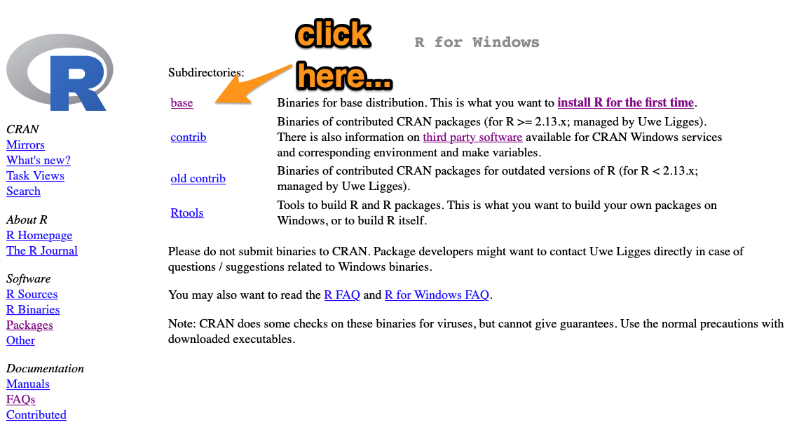
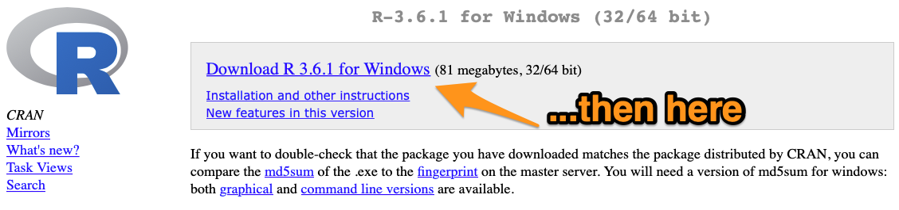

2 Getting started
This chapter gets you up and running with R Studio and writing R code like a real hacker.
Goals: By the end of this chapter you will have R and R Studio installed, and be able to write, execute and understand some simple R code.
2.1 Installing R and RStudio
Although you’ll usually work with R by opening RStudio, you need to install both R and RStudio separately.
Install R by going to CRAN, the Comprehensive R Archive Network. CRAN is a community-run website that houses R itself as well as a broad range of R packages.

You want to download the latest base R release, as a ‘binary.’ Don’t worry, you don’t need to know what a binary is.
For Windows, you’ll need to click on the ‘base’ version, and then click again to start the download.

Once you’ve installed R, you’ll need to install RStudio. Go to the RStudio website and install the latest version of RStudio Desktop (open source license).
Once they’re both installed, get started by opening RStudio.
2.2 Setting up RStudio
Will to finish. Include:
- Save data off (and other good defaults)
- Colour theme (important!)
2.3 Scripts and ‘coding’
R is a script-based program. You write a list of instructions and R will follow it. This is wonderfully handy:
- everything you have told it to do, it will do;
- you have a record of everything you have told it to do.
But ‘coding’ can intimidating! However, it’s just a list of instructions. If you have ever used Excel you have used functions to create output. You have written code. You’re already a coder!
We can greatly enhance the things we can do by using R. The rest of this chapter is a short guide to walk you through your first lines of R code. If you get stuck or something doesn’t work or you have an urge to throw your computer out the window, please reach out to Will or James, or post on the #r_at_grattan Slack channel, and someone will help you out.
2.4 A practical introduction to writing R code
From within RStudio, open a new script by: File -> New File -> R Script.
In that script, let’s do three things:
- Write a comment starting with
#something R will ignore – it’s just there for you.
- Define an object: assign the number 119 to the object named
goodnumber.4 We assign something in R by using<-, which you can read as ‘assign the thing on the right to the objected on the left.’5 - Calculate a thing.
Your script will look like this:
# Hello I am starting my R script
goodnumber <- 119
2 * goodnumber## [1] 238The code that you write in your script will sit there idly until you send it to be processed in the console. Run the code by:
- sending the current line (where your cursor is) to the console with keyboard shortcut
CMD + return(Mac) orCTRL + shift(Windows); or - selecting a few lines of code and sending it to the console with the same keyboard shortcut; or
- running the whole script – from the first line to the last – clicking ‘Run’:
Having run your three lines of code, your RStuido should now look something like this:
The object are stored in your environment (top-right panel of your RStudio window). You can think about your environment as the things that R knows about at this point in time.
Exercise:
In your R script:
Define an object to be equal to 90
Multiply the object by 100
Divide the object by 10
# Hello I am starting my R script
goodnumber <- 119
2 * goodnumber## [1] 2382.4.1 Functions
A function takes inputs (arguments, or parameters), performs an operation (or many), and produces outputs. For example, we can use the c function to combine numbers into a series of numbers (called a vector):
c(3, 4, 5)## [1] 3 4 5‘combine the elements 3, 4 and 5 into a single vector’
You could combine this with the mean function that calculates the average by ‘nesting’ one function inside another:6